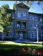

- Military Science classes are elective courses that use a
combination of academics and hands-on training to teach students leadership,
responsibility, and teamwork. These classes add management training, practical
experience, and personal growth opportunities to a student's college education.
-
- First and second-year course are open to any college student with
no military obligation required.
-
- This program is a partnership program of the Military Science Department at
Boise State University . For additional
information about Military Science you can go to Military Science
[Home][Scholarships][Army
Links][Frequently Asked
Questions]